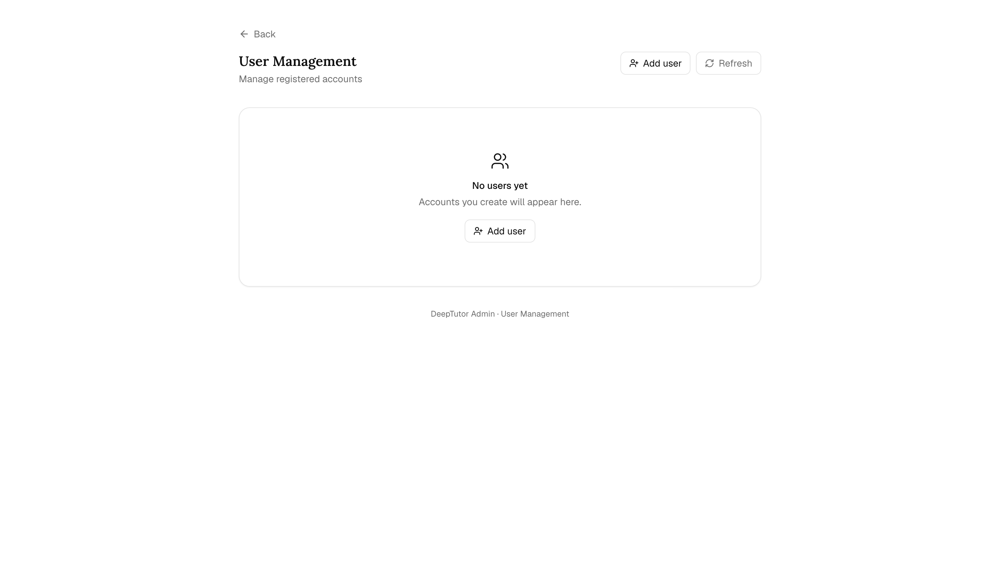

快速上手多使用者部署
DeepTutor 多使用者部署教學！5 步變身團隊版，獨立工作區免費搭，管理員統一發資源！
開啟認證開關，DeepTutor 就變成多租戶部署 —— 每個使用者擁有獨立的工作區，資源由管理員統一編排。
原文連結：https://docs.deeptutor.info/zh-cn/get-started/multi-user/
前面幾篇講的 DeepTutor 都是單機自用，最近不少朋友在問：工作室、學習小組能不能一起用一套？
還真能。開啟一個認證（auth）開關，DeepTutor 就變成多租戶部署：每個使用者擁有獨立的工作區，資源由管理員（admin）統一編排。整個流程官方寫成了 5 步，開源免費，不用為席位掏一分錢。
第一個註冊的人成為 admin，代表其他人設定模型、API 金鑰（API key）與知識庫。後續帳號由 admin 建立（邀請制），每個人有自己作用域內的對話歷史 / 記憶 / 筆記本 / 知識庫和私密個人書。他們能看到獲分配的大語言模型（LLM）、知識庫與技能，自己建立或獲分配的學習夥伴（Partner），以及按 read/edit 等級授權的管理員共享書。
但是問題來了。多使用者一開，權限怎麼分、資料怎麼隔離、生產環境要注意什麼？接下來，我們就把 5 步走完，再把細節攤開講。
一、快速上手（5 步）
# 1. 在 data/user/settings/auth.json 里开启 auth：
# {"enabled": true, "token_expire_hours": 24, "cookie_secure": false}
# Web 和 API 跨站的 HTTPS 部署请用 cookie_secure=true。
# 2. 重启 web 栈。
deeptutor start
# 3. 打开 http://localhost:3782/register 并创建第一个账号。
# 第一次注册是唯一一次公开注册；那个用户成为 admin，之后
# /register 端点会自动关闭。
# 4. 以 admin 身份进入 /admin/users → "Add user" 给团队成员开账号。
# 5. 对每个用户，点击 slider 图标 → 分配资源 grant，再设置 Book access
# （个人书创建、默认访问与逐书 read/edit）。保存后用户即可登录使用。拆開看：第 1 步在 data/user/settings/auth.json 裡開啟開關；第 2 步重新啟動服務；第 3 步註冊第一個帳號，這是唯一一次公開註冊，這個使用者自動成為 admin，之後 /register 會自動關閉；第 4 步以 admin 身份給團隊成員開帳號；第 5 步給每個使用者分配資源授權（grant）和書籍訪問權限，儲存後就能登入用了。

二、admin 能看到什麼
- 完整的設定頁面，在
/settings—— 管理可複用的服務商連線（Connections），以及 LLM、Task Models、向量化模型（Embedding）、搜尋、TTS、STT、影像與影片服務的 profiles。Task Models 負責會話標題和 Home 起始建議；留空時繼承 LLM。 - 使用者管理，在
/admin/users—— 建立 Standard、Learner 或 Custom 帳號，再提升、降級或刪除。建立 Learner 時會初始化受限學習授權與資料；第一個 admin 出現後公開/register會關閉，後續帳號透過管理員介面建立。 - 授權編輯器 —— 對每個非 admin 使用者，挑選他們可用的 LLM 模型、知識庫、技能和學習夥伴，把系統工具（聯網搜尋、論文搜尋……）、MCP（模型上下文協定）工具和已安裝的 CLI 應用收窄成白名單，也可以徹底關掉程式碼執行。工具白名單與 Partner 設定同語義： Default 全部放行， Custom 是顯式白名單。授權只帶 邏輯 ID ；API key 永遠不會越過授權邊界。
- Book access 編輯器 —— 允許建立個人書，為共享管理員書設定預設權限（
none或read），並逐書覆蓋為none、read或協作edit。共享刪除不下放；進度、書籤、測驗作答、capture 與 Page Chat 關聯保持私密。 - Hub skill 安裝 ——
POST /api/v1/multi-user/admin/skills/install（僅 admin）把 ClawHub 等外部 hub 的 skill 匯入 admin catalog。安裝 ≠ 分配：在 grant 分配之前，其他使用者看不到這個 skill，admin 可以先自己驗證。每次安裝都進稽核追蹤。 - 稽核追蹤 —— 每次授權變更和被授權資源的訪問都會追加到
data/system/audit/usage.jsonl。
一個開源專案把權限顆粒度做到這個程度，確實有點離譜（褒義）。
三、普通使用者得到什麼
- 獨立工作區，在
data/users/<uid>/下 —— 自己的對話歷史（chat_history.db）、記憶、筆記本和個人知識庫。預設什麼都不共享。 - 只讀訪問 admin 分配的知識庫和技能，在他們自己的資源旁邊以 “Assigned by admin” 徽章並列展示。
- 受限的共享書訪問 —— 獲准的管理員書可以只讀，也可以協作編輯；標準內容保持共享，而每位讀者的進度、書籤、測驗作答、capture 與 Page Chat 關聯保持私密。
- 刪減版設定頁面 —— 展示主題、語言、已授權模型摘要、自己的 OpenAI Codex 登入、學習者帳號的 Learner profile，以及獲授權時的 Guardian 管理。API key、base URL 和 provider endpoint 不會回傳給非 admin 請求。
- 作用域內的 LLM —— 對話輪次透過 admin 分配的模型走。如果沒有授權的 LLM，那一輪會被直接拒絕（不會偷偷 fallback 到 admin 的 key）。
- 作用域內的工具 —— 輸入框、
/settings/tools頁面以及每一輪對話都只暴露授權白名單內的系統工具、MCP 工具和 CLI 應用；程式碼執行在部署沙箱策略之上再尊重每使用者開關。
但是最近情況又發生了一點變化：以前的多使用者資料放在與 data/ 平級的 multi-user/ 目錄裡，現在佈局整棵挪進了 data/ 之下。
四、工作區佈局
所有資料都在 data/ 下，掛載和備份只需要這一棵樹：
data/
├── user/ # Admin 工作区（设置、API key、admin 任务）
├── system/
│ ├── auth/users.json # 凭证哈希、角色、逐用户 Book ACL
│ ├── auth/auth_secret # JWT 签名密钥（自动生成）
│ ├── auth/device_credentials.json # 可撤销的学习者设备凭据
│ ├── guardians.json # Guardian ↔ learner 授权关系
│ ├── grants/<uid>.json # 每个用户的资源授权（admin 管理）
│ ├── audit/usage.jsonl # 审计追踪
│ └── user-secrets/<owner>/ # 按归属账号存放的凭据（Codex OAuth 令牌）
├── cli-apps/ # 已安装的 CLI 应用（沙箱内只读）
├── users/<uid>/
│ ├── user/
│ │ ├── chat_history.db
│ │ ├── settings/interface.json
│ │ └── workspace/{chat,co-writer,book,...}
│ ├── memory/
│ └── knowledge_bases/...
└── partners/<id>/ # Partner 工作区從 v1.5 之前的佈局（與 data/ 平級的 multi-user/ 目錄）升級的部署會在首次啟動時自動遷移：multi-user/_system 移到 data/system，每個 multi-user/<uid> 移到 data/users/<uid>。
五、設定參考
| 設定 | 必填 | 說明 |
|---|---|---|
| data/user/settings/auth.json: enabled | 是 | 設為 true 開啟多使用者 auth。預設 false （單使用者模式 —— 各處都走 admin 路徑）。 |
| data/system/auth/auth_secret | 推薦 | JWT 簽章金鑰。首次帶認證啟動時，若缺失會自動生成。 |
| data/user/settings/auth.json: token_expire_hours | 否 | JWT 壽命；預設 24 。 |
| data/user/settings/auth.json: cookie_secure | HTTPS / 跨站認證 | 設為 true 後 session cookie 使用 SameSite=None; Secure 。本機 HTTP 保持 false 。 |
| data/user/settings/auth.json: username / password_hash | 否 | 可選的 headless 單使用者引導憑證。用瀏覽器註冊時留空。 |
| data/user/settings/system.json | 否 | deeptutor start 會從執行環境設定推導前端 auth flag、public API base 和 CORS origins。 |
六、重要注意事項
⚠️ PocketBase 模式（設定了
integrations.pocketbase_url）只支援單使用者。 預設 PocketBase schema 在users上沒有role欄位（每次登入解析為role=user，無法建立 admin），因此即便sessions記錄現在已按user_id隔離，PocketBase 仍無法支撐真正的多使用者部署。多使用者部署必須把integrations.pocketbase_url留空，使用預設的 JSON/SQLite 後端。
⚠️ 單一處理程序引導。 “第一個使用者自動提升為 admin” 由處理程序內的
threading.Lock保護。先開啟 auth，只啟動一個後端處理程序並註冊首位 admin，再增加 workers。auth.json.enabled=false時註冊端點會直接拒絕請求。
這兩條是翻車重災區，部署前務必看一遍。
七、生產 checklist
- ✅ 設定一個強
auth_secret並備份 - ✅ 在
auth.json裡設cookie_secure: true，讓 session cookie 必須走 HTTPS - ✅ 把 DeepTutor 放在反向代理後面（Caddy、nginx、Traefik），用 TLS 終止，指向前端連接埠（前端會在內部把
/api/*轉發給後端，除非後端和前端分開跑，否則不需要設定 API base） - ✅ auth 開啟且 Web/API 跨 origin 時，把
cors_origins設成精確前端 origin - ✅ 定期備份
data/，帳號、授權和所有工作區都在這一棵樹下 - ✅ Docker：保留
docker-compose.yml裡的./data:/app/data卷。runner 掛載data/user/workspace和 整棵data/users；非 admin 程式碼因此能讀取所有使用者的設定、聊天資料庫和知識庫。data/system與 admin 的data/user/settings不掛載；僅在邀請制信任範圍內使用
八、Caddyfile 範例
deeptutor.example.com {
reverse_proxy localhost:3782
}前端會自己把 /api/* 和 /ws/* 轉發給後端，所以只要一條指向前端連接埠的 reverse_proxy 就夠了。然後在 data/user/settings/system.json 裡只配跨域（CORS）（這種單機部署不需要 API base）：
{
"cors_origins": ["https://deeptutor.example.com"]
}只有拆分部署（後端在另一台主機/容器上）才需要 API base：把 next_public_api_base 設成後端的內部網路地址；它由前端代理在伺服器端讀取，不會發給瀏覽器。public_api_base 和 next_public_api_base_external 作為更低優先順序的回退被接受。
在 data/user/settings/auth.json 裡：
{
"enabled": true,
"token_expire_hours": 24,
"cookie_secure": true
}九、常見錯誤
開啟 auth 後 404 /register
前端 bundle 可能被快取了。用 Docker 的話，重新建立容器。從原始碼起的話，編輯完 auth.json 後重新啟動 deeptutor start。
第一次登入能進但沒有 admin 連結
確認 data/system/auth/users.json 裡第一個使用者的 "role": "admin"。如果不是，手動改掉並重新啟動。
重新啟動後 Cannot decode JWT
auth_secret 丟了或被重新生成，登入權杖（JWT）就全部失效了。從備份還原，或者接受新的 secret 然後要求所有使用者重新登入。
十、headless 單使用者引導
對於沒人能在瀏覽器裡註冊的自動化場景，直接在 auth.json 裡設憑證：
{
"enabled": true,
"username": "alice",
"password_hash": "<bcrypt-hash>",
"token_expire_hours": 24
}生成 hash：
import bcrypt
print(bcrypt.hashpw(b"your-password", bcrypt.gensalt()).decode())然後 deeptutor start，用 alice + your-password 登入。
更多修復方法：故障排查。
DeepTutor 相關下載點
1、GitHub 儲存庫【點選前往】
2、PyPI 官方源【點選前往】
3、官方文件【點選前往】
部署過程遇到問題，歡迎在留言區留言，把報錯的完整日誌貼出來，我看到會回覆。